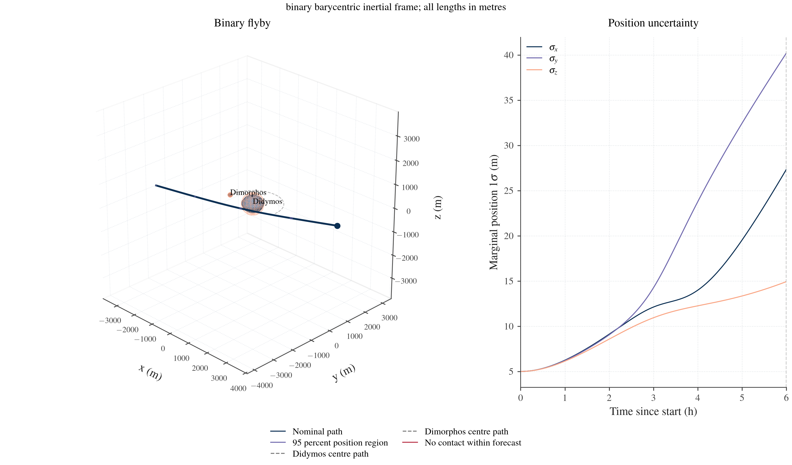
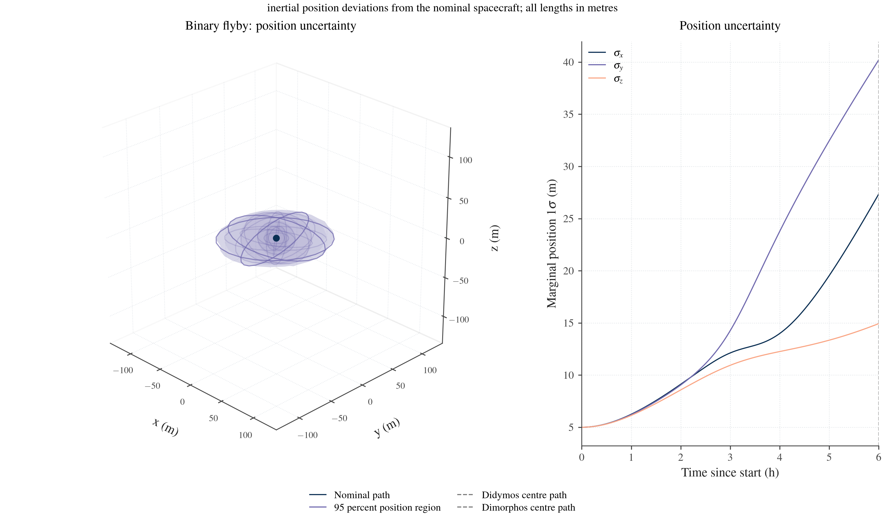
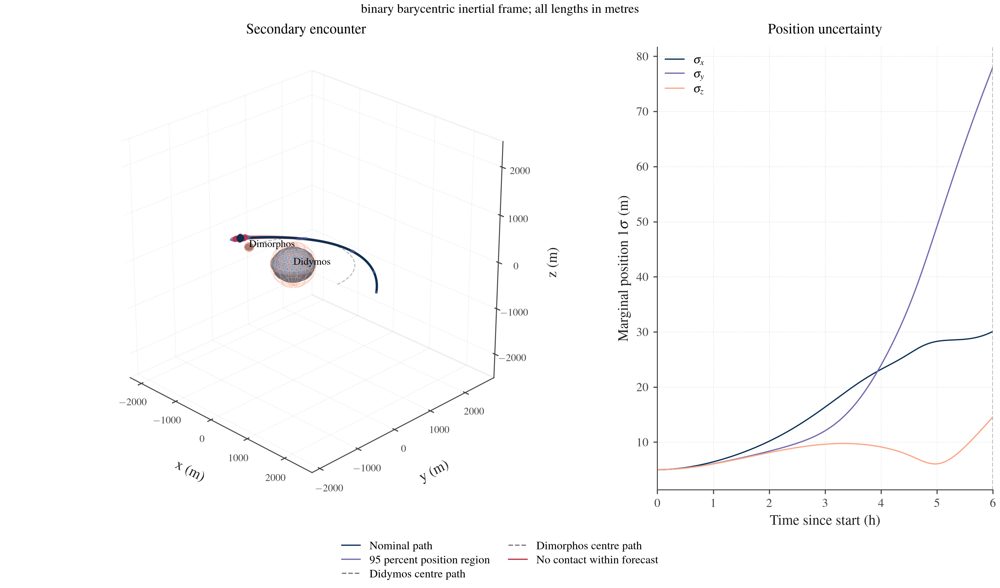
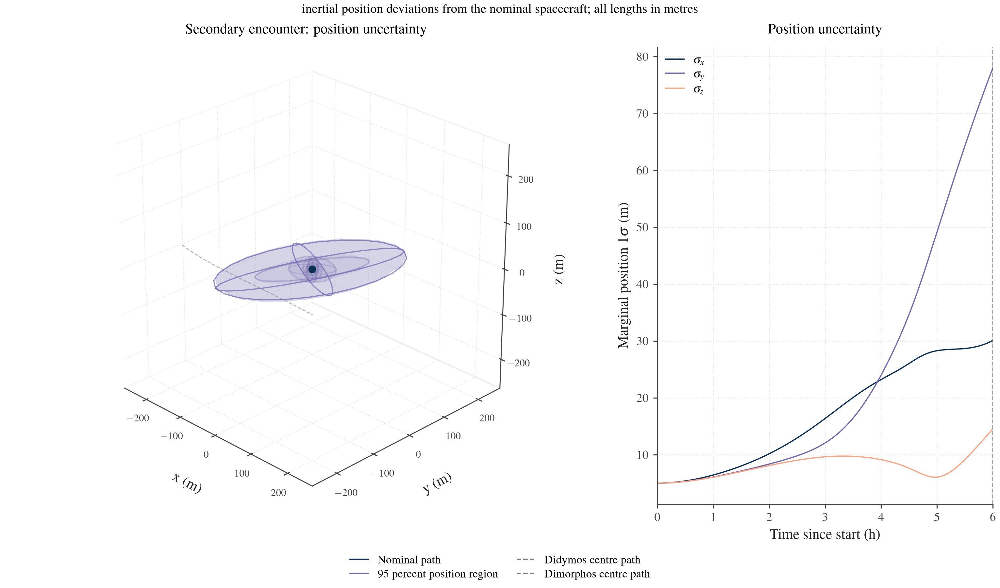
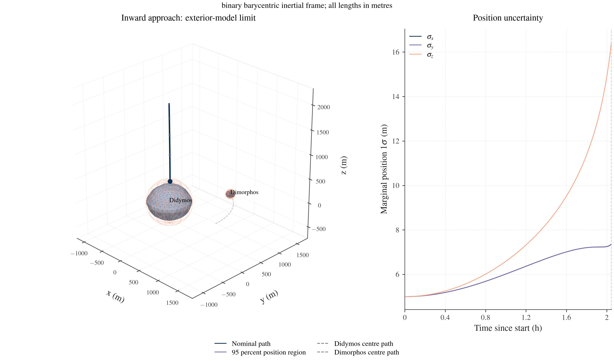
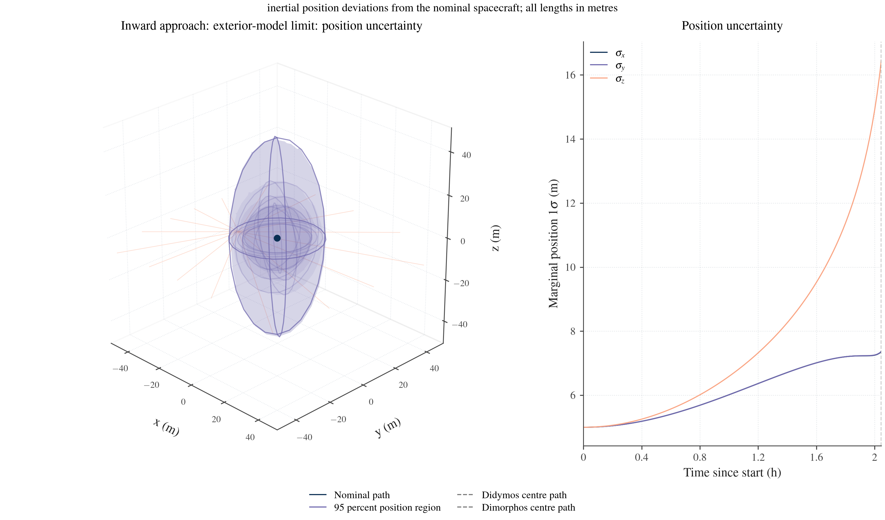
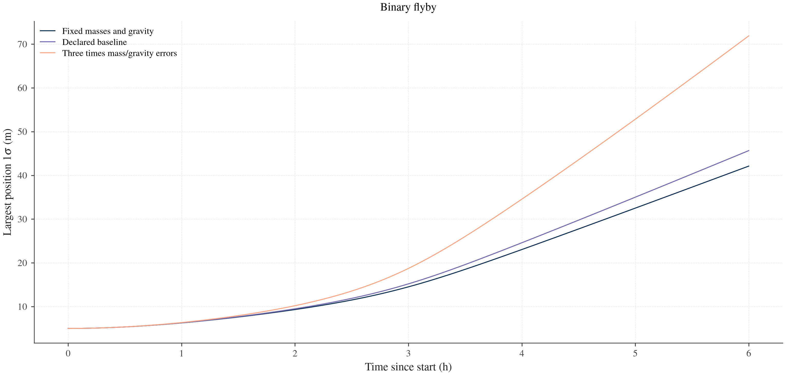
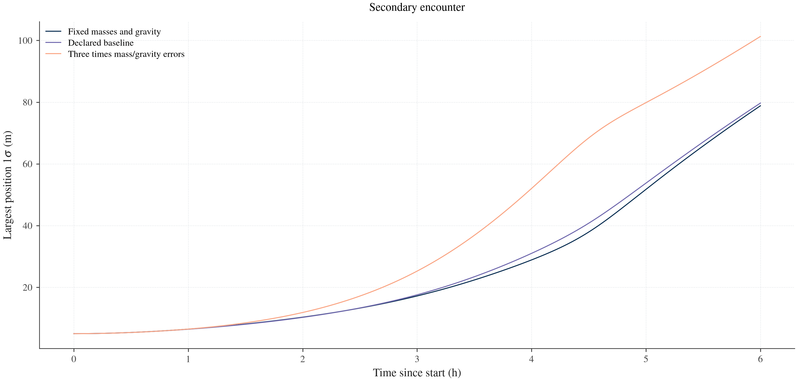
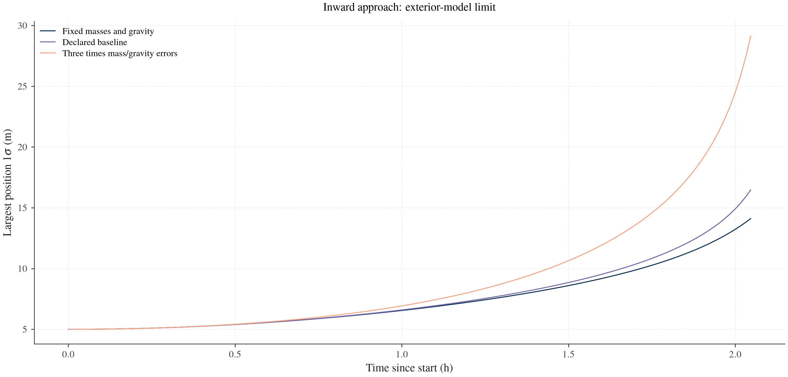

Long approaches and flybys
These examples follow a massless spacecraft for several hours around both members of the Didymos binary. They show curved inertial trajectories, both moving asteroid meshes and position uncertainty that changes in size and direction. The same restricted full three-body dynamics, original-source covariance maps and saved-scene renderers used in the short surface approaches perform the calculation.
Choose a case and a view:
| Case | Trajectory and moving bodies | Position uncertainty |
|---|---|---|
| Binary flyby | Interactive trajectory | Interactive uncertainty |
| Secondary encounter | Interactive trajectory | Interactive uncertainty |
| Inward approach to the exterior-model boundary | Interactive trajectory | Interactive uncertainty |
The cases start approximately 2–4 km from the binary barycentre. They are conditional gravity-only covariance examples, with no simulated measurements, estimation or filter update. Their initial states are declared demonstration inputs. Solar radiation pressure, solar tides and maneuvers are omitted. Published Milani and Juventas operations motivate the distance and time scales; these examples do not reproduce their flight trajectories or a solar terminator orbit.
The 3D regions are linear covariance ellipsoids. Selected red paths reach the forecast horizon without contact; they are unweighted direction probes, not a miss probability. The closer secondary encounter shows appreciable finite-amplitude nonlinearity, quantified under linearization checks.
User runner · Evidence and saved-data rendering · Scope and primary references · Scientific acceptance
Cases and results
The binary uses order-6 extended-body Hou gravity and coupled translation/rotation. The spacecraft uses both exterior Hou fields, with their enclosing-sphere checks active. Uncertain source coordinates include the binary initial state, both masses, moments through degree 4 and the spacecraft's inertial initial state. Mutual gravity order, uncertain parameter degree, initial trajectory and source factor are separate configuration choices.
| Quantity | Binary flyby | Secondary encounter | Inward approach |
|---|---|---|---|
| Initial barycentric distance | 3,753.66 m | 2,209.07 m | 2,000 m |
| Requested duration | 6 h | 6 h | 4 h |
| Reported outcome | No contact within 6 h | No contact within 6 h | Exterior field domain ends |
| Final supported epoch | 21,600 s | 21,600 s | 7,366.85 s |
| Minimum sampled Didymos-centre distance | 1,166.30 m | 1,151.84 m | 439.36 m, enclosing boundary |
| Minimum sampled Dimorphos-centre distance | 2,246.19 m | 200.23 m | 1,254.85 m |
| Inertial velocity-direction change | 30.33° | 96.38° | 1.02° |
| Initial principal position standard deviations | 5, 5, 5 m | 5, 5, 5 m | 5, 5, 5 m |
| Final principal position standard deviations | 8.30, 20.81, 45.66 m | 10.18, 27.36, 79.71 m | 7.35, 7.38, 16.47 m |
Minimum distances in this table are sampled at saved trajectory epochs, not continuously optimized periapsis values. Velocity-direction change compares the initial and final inertial velocity vectors. Rotation of a body-fixed display is not counted as physical trajectory bending. no_contact applies only to a trajectory reaching its requested horizon under the supported model.
Binary flyby


Explore the uncertainty evolution
Secondary encounter
The closer secondary passage changes both the spacecraft's inertial velocity and the accumulated sensitivity to its initial state and the binary gravity parameters. Both moving bodies use the same stored binary history as the nominal trajectory.


Explore the uncertainty evolution
Inward approach and the field boundary
The third case starts 2 km from the barycentre and travels inward. The exterior field reaches the Didymos enclosing-sphere boundary at approximately 7,366.85 s, before the requested four-hour horizon. Propagation stops with domain_exit. The Didymos enclosing radius is approximately 439.358 m; this is a model-domain boundary, not the asteroid surface.
The last ellipsoid is the fixed-time covariance at the supported arc endpoint, not uncertainty in the model-boundary event. This result supplies no surface contact, landing footprint or complete-horizon miss. The accepted short surface examples use separately checked local fields. A transition from this long exterior approach to a local field requires compatible nominal forces, complete source maps and a validated transition policy; none is inferred from a plotted sphere crossing.

Explore the supported trajectory

Explore the supported uncertainty history
Position uncertainty and the display frame
The trajectory view uses the binary barycentric inertial frame. The uncertainty view subtracts the deterministic nominal spacecraft position from every displayed point at each epoch. This changes the display origin without introducing an uncertain reference body or rotating the frame. If the displayed coordinate is
r_{\mathrm{display}}(t)=r(t)-\bar r_{\mathrm{SC}}(t),
\qquad P_{\mathrm{display}}(t)=P_r(t),
the nominal spacecraft remains at the origin while its position distribution can expand and rotate. Both asteroid centres are translated by the same nominal curve. They are nominal contextual meshes, not independent uncertain realizations. Every ellipsoid axis remains in physical metres; no uncertainty magnification is applied. The covariance panel reports component standard deviations, and the 3D region uses the stored marginal probability, normally 95%, with chi-square scaling for its supported dimension.
Use the time slider or Play to follow physical elapsed time. The initial uncertainty camera is chosen to show the whole history's uncertainty extent. Overview restores system context, and the Moving bodies and paths control toggles the epoch-aligned asteroid overlays. Camera controls and layer visibility change presentation only. Back returns to this manual when browser history is available.
Use trajectory.inertial_history(quantity="position") for this report; quantity="velocity" and quantity="state" select inertial velocity and the complete six-state covariance, including position/velocity cross terms. The body-frame marginal remains available separately as trajectory.position_history. No user-side STM or sensitivity algebra is required.
The propagated fixed-time covariance has the form P_r(t) = L_r(t) L_r(t)^T, where L_r(t) maps the complete original latent source into inertial spacecraft position. State-transition and force-parameter sensitivities retain mass, gravity, binary-state and spacecraft cross terms. Growing or rotating ellipsoids therefore do not require new observations.
A future first-contact covariance is a different output. With the same fixed information and a complete state/parameter handoff, predicting the same future event from an intermediate epoch should preserve its event-corrected covariance. The position marginal can change throughout that interval. A contact ellipse should not shrink merely because the playback clock approaches landing. Contact-time and surface covariance explains the event correction. An observation-prefix history changes the information and is covered separately in covariance histories.
Compare mass and gravity assumptions
One nominal transport is reused for three declared source factors: fixed masses/gravity, the baseline mass/gravity uncertainties, and three times those errors. The row scaling acts on the full original factor, including its shared spacecraft columns. It preserves the initial spacecraft marginal and scales the associated cross covariance consistently. It does not create or remove observations, refit a solution or add independent variance budgets to correlated effects.



Changing nominal mass, gravity order or trajectory requires a new compatible transport. Changing only an uncertainty factor can use remap_approach. The user runner's make_source(..., gravity_scale=...) and run_problem(..., reuse=...) illustrate that separation.
Linearization checks
The ellipsoids show first-order covariance under the declared source distribution. They are not independently verified nonlinear probability regions. Each six-hour case also propagates six selected, unweighted trajectories: positive and negative twice-factor directions for the spacecraft velocity-x column, velocity-y column and a shared primary-mass column. The last column also changes spacecraft velocity through the declared correlation. These are complete latent directions, not independent changes to one parameter.
At the fixed final epoch, the check compares the predicted half-displacement l = J_r dq with the symmetric response s = (r_plus - r_minus)/2. It reports norm(s-l) / max(norm(s), norm(l)) and the nonlinear midpoint displacement from the nominal trajectory.
| Secondary-encounter source direction | Symmetric response discrepancy | Midpoint displacement |
|---|---|---|
| Spacecraft velocity x | 1.45% | 5.79 m |
| Spacecraft velocity y | 3.03% | 13.34 m |
| Shared primary mass | 9.05% | 14.50 m |
The binary-flyby maximum over the same three direction pairs is 0.0114% discrepancy and 0.551 m midpoint displacement. The closer secondary encounter is more nonlinear at the selected amplitudes. A tighter source distribution or an explicit nonlinear uncertainty study is needed before interpreting its linear region as quantitative coverage. These finite-amplitude checks are separate from opt-in small-step FD derivative checks and supply neither a miss probability nor Gaussian coverage verification. All selected flyby and encounter probes reach the six-hour horizon without contact under the supported model.
Both Hou derivative backends and a 10 s / 5 s integration-step refinement are compared in the scientific acceptance record. Backend and integration agreement establish numerical consistency; they do not remove the finite-amplitude linearization limits above.
Run or modify a case
Run the installed library from the repository root with an unused output directory:
python3 -B tools/dev.py run --plot examples/mission_scale_trajectories.py --scenario binary_flyby --output "$PWD/results/binary-flyby"
python3 -B tools/dev.py run --plot examples/mission_scale_trajectories.py --scenario secondary_encounter --backend native --output "$PWD/results/secondary-native"
The user runner saves the scientific trajectory, reusable numerical scene, interactive HTML and summary. Its CoastScenario holds the initial barycentric SI position/velocity, target, duration, integration step and output cadence. make_problem, run_problem, inertial_history, make_scene and make_uncertainty_scene each have one role and can be edited or reused separately. The scenario's expected outcome is an evidence assertion, not a propagation instruction.
The core propagation can be composed with an existing model, resolved parameters, original source and target mesh:
from basco import RK4
from basco.spacecraft import RestrictedDynamics, SpacecraftState
from basco.spacecraft.approach import propagate_approach
# model, parameters, source and surface are configured separately.
dynamics = RestrictedDynamics(model, parameters, backend="ad")
initial = SpacecraftState([-3000, -2200, 500], [0.3, 0.08, -0.01])
trajectory = propagate_approach(
dynamics, initial, source,
local_uncertainties={}, target="A", surface=surface,
duration=21600, cadence=60, integrator=RK4(10),
)
position = trajectory.inertial_history()
six_state = trajectory.inertial_history(quantity="state")
An empty local_uncertainties map selects no local uncertainty maps; it does not disable the exterior field guards. The dynamics configuration owns force-model selection. For both backends, source layout, units, epochs and field identities must match. The complete runnable example supplies the source and surface rather than assuming them from global state.
The evidence script separates numeric runs from presentation and adds the source-factor comparisons and optional independent probes:
python3 -B tools/dev.py run --plot tools/evidence/mission_scale_trajectories.py --case all --output "$PWD/results/long-coasts" --figures "$PWD/results/long-coast-figures" --animation
# Render the same completed numerical data without another propagation.
python3 -B tools/dev.py run --plot tools/evidence/mission_scale_trajectories.py --case all --output "$PWD/results/long-coasts" --figures "$PWD/results/long-coast-rerender" --animation --presentation-only
Scientific exports retain original source factors, native/physical histories and provenance separately from the public visualization payload. Saved scenes hold only derived display data. They can be loaded by read_flight_scene and sent to flight_figure, animate_flight or write_flight_html without constructing a force evaluator. The website mirrors figures, videos and self-contained viewers; it does not publish the original factors or numerical run archive.
Scope and next steps
The accepted domain of a gravity representation is part of the model. A larger cylindrical fit must independently pass its field and gradient checks across the full proposed vacuum volume and its relevant surface boundary. Increasing the cylinder height or basis count does not establish accuracy. The available MonopoleResidualField composes an exact mass term with a separately uncertain local residual, but kernel validation alone does not establish a long-approach landing field. Its mass and residual pathways must share the complete original source map.
A long coast followed by a landing still needs a validated common trajectory/field continuation, its complete covariance map and supported first contact. Solar radiation pressure, solar gravity, maneuvers and appropriate source uncertainties are further physical components for mission-specific studies. These remain explicit scope decisions; the current cases demonstrate gravitational curvature and covariance transport with the implemented model.
The mission-scale motivation and primary links are recorded in the design note. ESA's Milani description describes connected hyperbolic arcs on kilometre scales; ESA's Juventas description explains operations influenced by solar radiation pressure. These ESA pages were checked on 2026-10-28. Their mission trajectories require physics and operational inputs beyond this gravity-only demonstration.